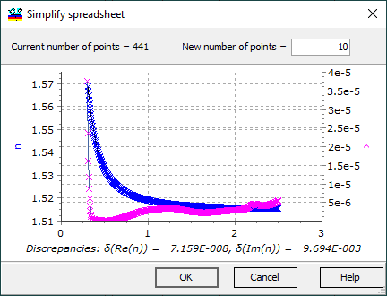

Table Simplify
Table simplify command:
This command allows you to reduce the number of spectral points, which may result in a slight decrease in accuracy.
You should specify the new number of points at the top of the dialog.
Any discrepancies will be instantly shown under the curves, making it easy to assess the impact of the adjustments.
Once you find a satisfactory compromise between accuracy and complexity, you can save the result to the current Substrate/Layer Material editor by pressing the OK button.
